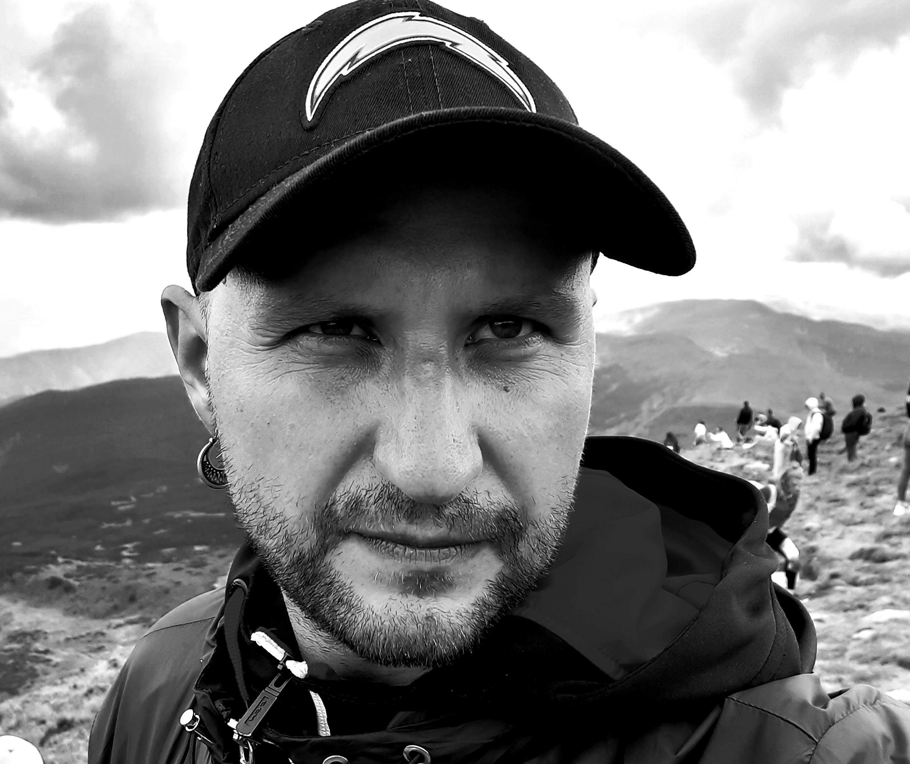

Лозовой Алексей Игоревич
О себе:
Легкий,коммуникабельный,целеустремленный,обучаемый.
Образование:
СШ-99
Украинский Химико-Технологический Университет(факультет ТВМС)
Опыт работы:
2003-2008 Заведующий Фотолаборатории "СВ ФОТО"
2008-2009 Менеджер ТЭК
2009-2012 Диспетчер отдела складской логистики ТОВ "БаДМ"
2012-2022 Аналитик консолидированной информации ТОВ "БаДМ"
Навыки и умения:
Знание английского языка на уровне:Pre-Intermediate
Уверенный пользователь компьютера
Семейное положение:
Женат,(есть ребенок).
Увлечения:
Путешествия: Город в который хочется вернуться
Фотография: Моя работа
Футбол: Кумир
Музыка: Любимая группа